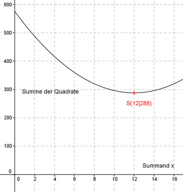

Aufgabe 117 In welche Summanden muss man die Zahl 24 zerlegen, damit die Summe der Quadrate der Summanden am kleinsten wird. Der eine Summand sei x Dann ist der andere 24 - x Das Quadrat des einen Summanden ist x2 Das Quadrat des anderen ist (24 - x)2 Die Summe S(x) = x2 + (24 - x)2 S(x) = x2 + 576 - 48x + x2 S(x) = 2x2 - 48x + 576 Dies ist die Funktionsgleichung einer nach oben geöffneten, gestreckten Parabel, deren tiefster Punkt der Scheitelpunkt ist. S(x) = 2x2 - 48x + 576 | :2 S(x) ------ = x2 - 24x + 288 2 Quadratische Ergänzung: S(x) ------ = x2 - 24x + 144 - 144 + 288 2 mit x2 - 24x + 144 = (x - 12)2 S(x) ------ = (x - 12)2 + 144 |*2 2 S(x) = 2(x - 12)2 + 288 Scheitelpunkt abgelesen: S(12|288) Die Scheitelpunktkoordinaten bedeuten: Der eine und „kleinere“ Summand x ist 12, die Summe der Quadrate ist 288. Beide Summanden sind gleich groß und = 12. 